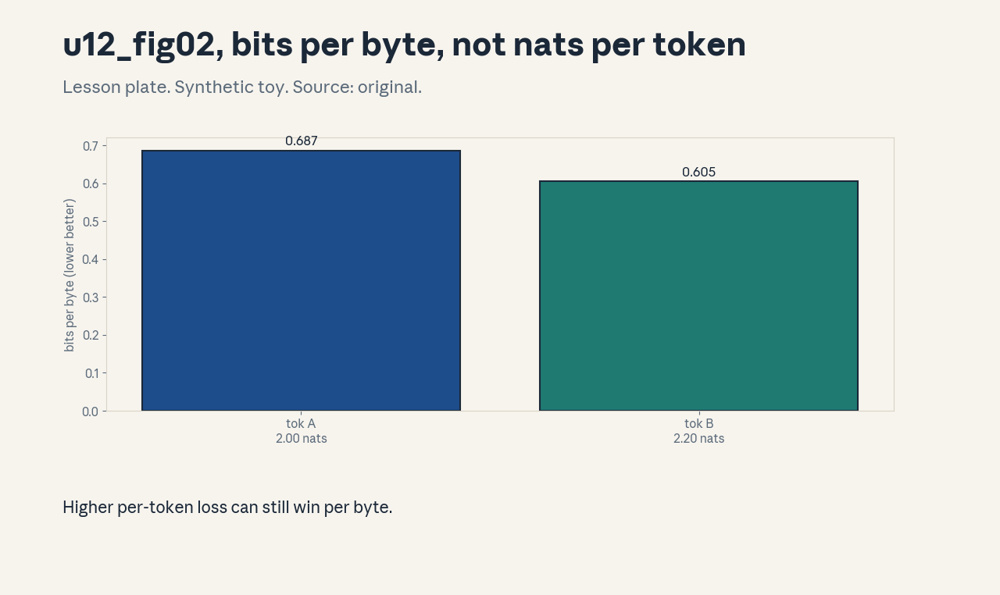
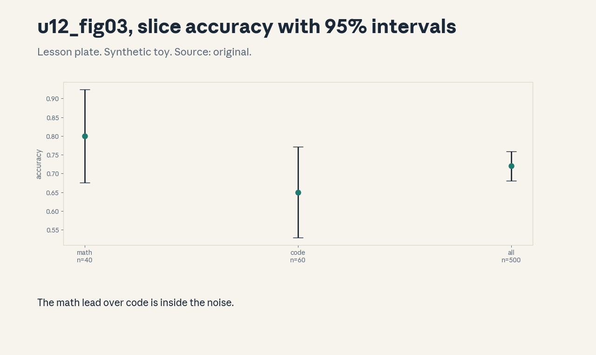

U12 · Evaluation and measurement validity
U12 , Evaluation and measurement validity
Prerequisites: P07, P10, P22. Bridge links in ../prerequisites.md.
Session: S12 (reported May 6, Evaluation). Full session map in
../course_map.md.
Claim class: REQUESTED-BRANCH. All leaves PLANNED / SOURCE ATTRIBUTION
PENDING. Notation: see ../notation_and_shapes.md.
Standing note
Every number below is computed by assets/compute_u12.py on
synthetic toys with fixed seeds (numpy CPU, executed 2026-10-06).
No real benchmark was run. Scores, judges, and corpora are labeled
toys. “Not in source” marks anything the scripts do not compute.
Russian-doll map
Shells 0-1 in items 1-2, shells 2-3 in items 3-6, shell 4 in item 7, shell 5 in item 8, shell 6 in item 9, shell 7 in item 11, shell 8 in item 10, shell 9 in item 12, shell 10 in item 13(c). The depth gate is checked by item 13.
Local remediation , uncertainty first
Read this if diagnostic items on confidence intervals were not full
marks. A score without an interval is a rumor. For accuracy p on n
items, SE = sqrt(p(1-p)/n) and the 95% interval is p +- 1.96 SE.
Toy: n=500, p=0.72 gives SE 0.020 and [0.681, 0.759]. Five
synthetic seeds range 0.034, inside the band. Assessment: n=40,
p=0.80. Compute the half-width. Key: ../keys/u12_answers.md R1.
C01: Held-out loss/perplexity
Leaf id cs336-U12-C01. Claim class REQUESTED-BRANCH.
Status PLANNED / SOURCE ATTRIBUTION PENDING.
-
Source mapping, scope, objectives, dependencies. Branch. Scope: the basic language-model metric. Objectives: convert loss to perplexity, state what it measures. Depends on P08.
-
Motivating question and toy. Question: loss 2.3, what does that mean? Toy from
compute_u12.py: perplexity = e^2.3 = 9.97. Loss 1.7 -> 5.47. Loss 1.0 -> 2.72. -
Mental model. Perplexity is the effective branching factor: the model is as confused as if it chose uniformly among 9.97 tokens. Lower is better. It measures fit to the held-out distribution, nothing more.
-
Objects, symbols, units, shapes, assumptions. Perplexity: dimensionless, >= 1. Assumption: natural-log loss, held-out data unseen in training.
-
Derivation / mechanism. Perplexity = exp(mean negative log likelihood). It is the geometric mean of 1/p over tokens.
-
Computed example. From
assets/compute_u12.py(executed 2026-10-06): 9.97, 5.47, 2.72. -
Algorithm and reference implementation.
ppl(losses): return exp(mean(losses)). Two lines. -
Correctness checks and expected output. Loss 0 gives perplexity 1. Monotone in loss.
-
Costs. Perplexity averages over all tokens equally, but tasks care about some tokens more. It also depends on the tokenizer (C03).
-
Nearest alternative and selection boundary. Bits per byte (C03) for cross-tokenizer comparison. Task accuracy (C05) for capability claims.
-
Failure case and counterexample. The held-out set leaks into training (C02): perplexity looks great and means nothing. The assumption “held-out” breaks, check provenance.
-
Research reading and falsifiable extension. Reading: the standard LM evaluation practice (primary sources: the respective benchmark papers). Extension: compute perplexity on two disjoint held-out splits of a synthetic corpus. hypothesis: they agree within the SE band.
-
Assessment. (a) Recall: the exp conversion and its meaning. (b) Oral ladder: define perplexity, compute the toy, justify the geometric mean, implement
ppl, compare with bits per byte, debug the leaked-split case, critique the equal-weighting, design the two-split test. (c) Transfer: model A loss 2.0, model B loss 2.1, different tokenizers. Can you rank them? Answers:../keys/u12_answers.mdA1. -
Lab and exercises. Lab U12 task 1 converts losses. See
../labs/u12_lab.md. -
Visuals. No dedicated figure, the conversion is one line. No unresolved conflict.
C02: Contamination
Leaf id cs336-U12-C02. Claim class REQUESTED-BRANCH.
Status PLANNED / SOURCE ATTRIBUTION PENDING.
-
Source mapping, scope, objectives, dependencies. Branch. Scope: detecting benchmark text in training data. Objectives: run an n-gram overlap check, plant and recover a canary. Depends on P10.
-
Motivating question and toy. Question: did the benchmark leak into training? Toy from
compute_u12.py: a synthetic corpus of 10,000 docs with 300 planted benchmark items shows 100.0% overlap by exact match, a planted unique 8-gram canary is recovered with recall 1.00. -
Mental model. Contamination is memorization wearing an eval costume. Exact-match overlap finds verbatim leaks. A canary (a unique string inserted at crawl time) proves the pipeline carries eval text into training.
-
Objects, symbols, units, shapes, assumptions. Overlap rate: fraction of benchmark items found. Assumption: exact match on the toy, real checks use n-gram thresholds.
-
Derivation / mechanism. Hash every benchmark n-gram, probe the training corpus index. The canary is found by literal search. Both are detection, not prevention.
-
Computed example. From
assets/compute_u12.py(executed 2026-10-06): overlap 100.0%, canary recall 1.00. -
Algorithm and reference implementation. Build the n-gram set of the benchmark, count hits in the corpus. About 10 lines on the toy.
-
Correctness checks and expected output. Planted items are all found. Unplanted items are not found (up to hash collisions).
-
Costs. Paraphrased leaks evade exact match. Fuzzy matching costs compute and brings false positives.
-
Nearest alternative and selection boundary. Train/test dedup at the document level (U14-C06). Overlap audit for the final report.
-
Failure case and counterexample. The benchmark is reworded in training: exact overlap reads 0% while the model still memorized the content. The assumption “leaks are verbatim” breaks, add near-dup detection.
-
Research reading and falsifiable extension. Reading: the contamination studies (Roberts et al., secondary). Extension: paraphrase 50 planted items in the toy, hypothesis: exact overlap falls while MinHash overlap stays high.
-
Assessment. (a) Recall: the two detection tools. (b) Oral ladder: define contamination, compute the toy, justify the canary, implement the overlap check, compare exact with fuzzy, debug the paraphrase case, critique the threshold choice, design the paraphrase test. (c) Transfer: overlap 2% on 13-grams. Contaminated or not? Defend. Answers:
../keys/u12_answers.mdA2. -
Lab and exercises. Lab U12 task 2 runs the overlap toy. See
../labs/u12_lab.md. -
Visuals. No dedicated figure. No unresolved conflict.
C03: Tokenizer comparability
Leaf id cs336-U12-C03. Claim class REQUESTED-BRANCH.
Status PLANNED / SOURCE ATTRIBUTION PENDING.
-
Source mapping, scope, objectives, dependencies. Branch. Scope: comparing losses across tokenizers. Objectives: compute bits per byte, show it can reverse a per-token ranking. Depends on C01, U01.
-
Motivating question and toy. Question: tokenizer A gives loss 2.00, B gives 2.20. Is A better? Toy from
compute_u12.py: bits per byte are A 0.687, B 0.605. B wins: it uses fewer tokens per byte. -
Mental model. Per-token loss divides by the tokenizer’s own token count. Bits per byte divides by bytes, which no tokenizer controls. It is the common denominator.
-
Objects, symbols, units, shapes, assumptions. Bits per byte = loss x tokens / bytes / ln 2. Assumption: the toy counts (1000 vs 800 tokens on 4200 bytes).
-
Derivation / mechanism. Total nats = loss x tokens. Divide by bytes, convert nats to bits. Tokenizer differences cancel out of the denominator.
-
Computed example. From
assets/compute_u12.py(executed 2026-10-06): A 0.687, B 0.605 bits per byte. -
Algorithm and reference implementation.
bpb(loss, tokens, bytes): return loss*tokens/bytes/log(2). Two lines. -
Correctness checks and expected output. Same tokenizer: ranking matches per-token loss. B’s win reverses the naive reading.
-
Costs. Bits per byte still depends on the byte content (language, domain). Compare on the same corpus.
-
Nearest alternative and selection boundary. Word-level perplexity (worse: word definitions vary). Bits per byte is the standard for cross-tokenizer claims.
-
Failure case and counterexample. Different corpora: B looks better because its corpus is easier. The assumption “same bytes” breaks, fix the corpus first.
-
Research reading and falsifiable extension. Reading: the bits-per-byte practice in LM papers (secondary). Extension: recompute the toy with A and B swapped in efficiency. hypothesis: the ranking follows bytes per token.
-
Assessment. (a) Recall: the formula and why it is fair. (b) Oral ladder: define bits per byte, compute the toy, justify the byte denominator, implement
bpb, compare with per-token loss, debug the different-corpus case, critique the domain dependence, design the swap test. (c) Transfer: two papers report perplexity 10 and 12 with different tokenizers. What do you ask for? Answers:../keys/u12_answers.mdA3. -
Lab and exercises. Lab U12 task 3 computes bits per byte. See
../labs/u12_lab.md. -
Visuals. Figure u12_fig02: the reversed ranking bars. Source: original. Render:
assets/render_u12.py.

C04: Internal versus external evaluation
Leaf id cs336-U12-C04. Claim class REQUESTED-BRANCH.
Status PLANNED / SOURCE ATTRIBUTION PENDING.
-
Source mapping, scope, objectives, dependencies. Branch. Scope: the two audiences for evals. Objectives: state what each is for and what each must not do. Depends on P22.
-
Motivating question and toy. Question: the team iterates daily on a dev set and reports monthly on a hidden set. Why two sets? Because tuning on the reported set lets the test set train the model, with extra steps.
-
Mental model. Internal evals steer: fast, frequent, on data the team can inspect. External evals judge: held-out, versioned, run by someone else. Mixing the two inflates the headline number.
-
Objects, symbols, units, shapes, assumptions. Two splits with no overlap. Assumption: the external set stays hidden from the training loop and from prompt tuning.
-
Derivation / mechanism. No derivation, it is a protocol. Every decision made against a set consumes some of its statistical power (multiple comparisons, P07).
-
Computed example. Toy: 20 daily decisions against the dev set, each with 5% false-positive risk: the chance at least one bogus “improvement” survives is 1 - 0.95^20 = 64%.
-
Algorithm and reference implementation. A protocol checklist: dev for iteration, frozen external for reporting, log every external run. Text, not code.
-
Correctness checks and expected output. External runs are rare and logged. Dev and external trends agree in direction.
-
Costs. Hidden sets cost curation and guarding. Leaked external sets cost the entire evaluation program.
-
Nearest alternative and selection boundary. Single public benchmark (simple, gets gamed). The two-tier protocol for any serious claim.
-
Failure case and counterexample. The external set is “hidden” but its items appear in training data (C02). The assumption “hidden means unseen” breaks, audit provenance.
-
Research reading and falsifiable extension. Reading: the benchmark-gaming literature (secondary). Extension: simulate 20 rounds of dev-set hill-climbing on a synthetic metric. hypothesis: dev improves while a frozen external stays flat.
-
Assessment. (a) Recall: the two roles and the rule. (b) Oral ladder: define both, compute the 64% toy, justify the split, write the checklist, compare with a single benchmark, debug the leaked-external case, critique the cost, design the hill-climbing simulation. (c) Transfer: the external set must be refreshed yearly. State the migration rule. Answers:
../keys/u12_answers.mdA4. -
Lab and exercises. Lab U12 task 4 simulates the hill-climbing. See
../labs/u12_lab.md. -
Visuals. No dedicated figure. No unresolved conflict.
C05: Task suites
Leaf id cs336-U12-C05. Claim class REQUESTED-BRANCH.
Status PLANNED / SOURCE ATTRIBUTION PENDING.
-
Source mapping, scope, objectives, dependencies. Branch. Scope: multi-task benchmarks. Objectives: state what a suite measures and what it hides. Depends on P10.
-
Motivating question and toy. Question: the model scores 72% average. What does that mean? Toy from
compute_u12.py: slices read math 0.80 (n=40), code 0.65 (n=60), all 0.72 (n=500). The average hides a 15-point spread. -
Mental model. A suite is a portfolio of small bets. The average is the headline, the slices are the truth. Small slices have wide intervals (C01 remediation).
-
Objects, symbols, units, shapes, assumptions. Accuracy per task, macro average. Assumption: the toy slice numbers.
-
Derivation / mechanism. The macro average weights tasks equally regardless of size. A 5-point gain on a 40-item slice is 2 items: noise.
-
Computed example. From
assets/compute_u12.py(executed 2026-10-06): 0.80/0.65/0.72 with half-widths 0.124/0.121/ 0.039. -
Algorithm and reference implementation.
suite_report: per-task accuracy plus CI, then the macro average. About 10 lines. -
Correctness checks and expected output. The math lead over code (0.15) exceeds neither slice’s half-width: not a real lead on the toy.
-
Costs. Suites cost curation and become stale as models saturate them. A saturated suite measures nothing.
-
Nearest alternative and selection boundary. Single capability probes (cheap, narrow). Suites for breadth, probes for depth.
-
Failure case and counterexample. The suite is contaminated (C02): the average is memorization, not capability. The assumption “the suite is clean” breaks, audit first.
-
Research reading and falsifiable extension. Reading: the benchmark-saturation literature (secondary). Extension: drop the smallest slice and recompute, hypothesis: the average moves more than its own SE.
-
Assessment. (a) Recall: macro average and slice CIs. (b) Oral ladder: define a suite, read the toy, justify the intervals, implement
suite_report, compare with probes, debug the contaminated case, critique equal weighting, design the drop-slice test. (c) Transfer: two models differ by 1 point on the average. Decide if it matters. Answers:../keys/u12_answers.mdA5. -
Lab and exercises. Lab U12 task 5 reports a suite. See
../labs/u12_lab.md. -
Visuals. Figure u12_fig03: slice accuracies with intervals. Source: original. Render:
assets/render_u12.py.

C06: Instruction formats/scaffolds
Leaf id cs336-U12-C06. Claim class REQUESTED-BRANCH.
Status PLANNED / SOURCE ATTRIBUTION PENDING.
-
Source mapping, scope, objectives, dependencies. Branch. Scope: prompt format as a measurement variable. Objectives: quantify the format effect, fix the format before comparing models. Depends on P10.
-
Motivating question and toy. Question: same questions, three prompt formats. Toy from
compute_u12.py: accuracies 0.717, 0.723, 0.657. The format moves the score by 6.6 points, more than many model differences. -
Mental model. The prompt is part of the instrument. Change the instrument, change the reading. Scaffolds (few-shot examples, chain-of-thought cues) are stronger instruments with bigger effects.
-
Objects, symbols, units, shapes, assumptions. Accuracy delta across formats. Assumption: the synthetic 300-item toy.
-
Derivation / mechanism. No derivation, it is a controlled comparison. Hold the questions and the model fixed, vary only the format.
-
Computed example. From
assets/compute_u12.py(executed 2026-10-06): 0.717, 0.723, 0.657. -
Algorithm and reference implementation.
format_sweep: run the same items under each format, report deltas with CIs. About 10 lines. -
Correctness checks and expected output. The delta CIs decide if the format effect is real on the toy.
-
Costs. Format search is prompt tuning on the eval set: it consumes statistical power (C04).
-
Nearest alternative and selection boundary. One fixed format for all models (fair, may handicap some). Per-model best format (shows potential, not comparable).
-
Failure case and counterexample. The scaffold contains the answer pattern: the eval measures pattern matching, not reasoning. The assumption “the scaffold is neutral” breaks, ablate the scaffold.
-
Research reading and falsifiable extension. Reading: the prompt-sensitivity literature (secondary). Extension: strip the scaffold from the best format on the toy, hypothesis: the 6.6-point lead shrinks.
-
Assessment. (a) Recall: the format effect size. (b) Oral ladder: define the effect, read the toy, justify the control, implement
format_sweep, compare fixed with per-model formats, debug the answer-leak case, critique the tuning cost, design the strip test. (c) Transfer: model A used 5-shot, model B used 0-shot. The report ranks A first. Respond. Answers:../keys/u12_answers.mdA6. -
Lab and exercises. Lab U12 task 6 sweeps formats. See
../labs/u12_lab.md. -
Visuals. No dedicated figure, the delta table is in the lab key. No unresolved conflict.
C07: Generation settings
Leaf id cs336-U12-C07. Claim class REQUESTED-BRANCH.
Status PLANNED / SOURCE ATTRIBUTION PENDING.
-
Source mapping, scope, objectives, dependencies. Branch. Scope: decoding parameters as measurement variables. Objectives: state the settings with every reported score. Depends on U11-C08.
-
Motivating question and toy. Question: the score was measured at temperature 0.7, top-p 0.9. Is it comparable to a greedy score? No: the settings are part of the measurement, like the exposure time on a photograph.
-
Mental model. Greedy decoding measures the mode. Sampling measures the distribution. Pass@k needs sampling. exact-match accuracy usually wants greedy. The setting must match the metric’s intent.
-
Objects, symbols, units, shapes, assumptions. Temperature, top-p, top-k, seed, max tokens. Assumption: the U11-C08 toy behavior.
-
Derivation / mechanism. No derivation, it is a reporting rule. The score is a function f(model, items, settings): report all three arguments.
-
Computed example. From U11-C08: temp 0.5 -> top-1 0.865. temp 2.0 -> 0.455. The same model looks 40 points more confident under the colder setting.
-
Algorithm and reference implementation. An eval config record: model id, item set hash, full decoding settings, seed. Text template.
-
Correctness checks and expected output. Rerunning the config reproduces the score within the seed band.
-
Costs. Sampling-based metrics need many seeds (C09). Greedy is one run but answers a narrower question.
-
Nearest alternative and selection boundary. Fix settings across models (comparable). Tune per model (best-foot- forward, incomparable).
-
Failure case and counterexample. Max tokens too small: correct answers get cut off and score 0. The assumption “the setting does not censor” breaks, check length histograms.
-
Research reading and falsifiable extension. Reading: the eval-framework documentation practices (secondary). Extension: rescore the toy at three temperatures, hypothesis: the ranking of two close models flips.
-
Assessment. (a) Recall: the reporting rule. (b) Oral ladder: define the rule, read the toy, justify the match of setting to metric, write the config, compare fixed with tuned settings, debug the truncation case, critique the one-seed report, design the rescore test. (c) Transfer: a paper reports pass@1 with temperature 1.0. Diagnose. Answers:
../keys/u12_answers.mdA7. -
Lab and exercises. Lab U12 task 7 records configs. See
../labs/u12_lab.md. -
Visuals. No dedicated figure. No unresolved conflict.
C08: Judge reliability
Leaf id cs336-U12-C08. Claim class REQUESTED-BRANCH.
Status PLANNED / SOURCE ATTRIBUTION PENDING.
-
Source mapping, scope, objectives, dependencies. Branch. Scope: model-as-judge agreement. Objectives: compute agreement and kappa on a toy, state when a judge is usable. Depends on P07.
-
Motivating question and toy. Question: the judge agrees with humans 83% of the time. Good enough? Toy from
compute_u12.py: agreement 0.83, Cohen kappa 0.63. Kappa corrects for chance: 0.63 is substantial but not near-perfect. -
Mental model. A judge is a measurement device with its own error rate. Agreement without a chance correction flatters easy tasks. Kappa asks: how much better than coin-flipping the base rate?
-
Objects, symbols, units, shapes, assumptions. Kappa in [-1, 1]. Assumption: the 100-item synthetic toy, binary labels.
-
Derivation / mechanism. kappa = (agree - expected) / (1 - expected), where expected is the chance agreement from the marginal label rates.
-
Computed example. From
assets/compute_u12.py(executed 2026-10-06): agreement 0.83, kappa 0.63. -
Algorithm and reference implementation.
kappa(a, b): confusion counts, then the formula. About 8 lines. -
Correctness checks and expected output. Perfect agreement gives kappa 1. Random labels give kappa near 0.
-
Costs. Human labels for the calibration set are the real cost. An uncalibrated judge is a rumor with a GPU bill.
-
Nearest alternative and selection boundary. Human eval (expensive, trusted). Judge eval (cheap, needs calibration) for iteration, humans for the final claim.
-
Failure case and counterexample. The judge prefers longer answers and the models learn to ramble: the metric is gamed (U16-C11). The assumption “the judge is neutral” breaks, audit for length bias.
-
Research reading and falsifiable extension. Reading: the LLM-judge bias studies (secondary). Extension: correlate the toy judge’s errors with answer length, hypothesis: errors skew long.
-
Assessment. (a) Recall: kappa and its reading. (b) Oral ladder: define kappa, compute the toy, justify the chance correction, implement
kappa, compare with raw agreement, debug the length-bias case, critique the binary toy, design the length audit. (c) Transfer: kappa 0.4 on the calibration set. Can the judge rank models? Answers:../keys/u12_answers.mdA8. -
Lab and exercises. Lab U12 task 8 computes kappa. See
../labs/u12_lab.md. -
Visuals. No dedicated figure. No unresolved conflict.
C09: Confidence/seed variation
Leaf id cs336-U12-C09. Claim class REQUESTED-BRANCH.
Status PLANNED / SOURCE ATTRIBUTION PENDING.
-
Source mapping, scope, objectives, dependencies. Branch. Scope: run-to-run variation. Objectives: report seed bands, separate signal from seed noise. Depends on P07.
-
Motivating question and toy. Question: the score moved 3 points between runs. Did the model change? Toy from
compute_u12.py: five synthetic seeds give accuracies [0.724, 0.708, 0.730, 0.696, 0.724], range 0.034. A 3-point move is inside seed noise. -
Mental model. Sampling and data order inject noise. The seed band is the ruler: differences smaller than the band are not differences.
-
Objects, symbols, units, shapes, assumptions. Seed: the RNG state. Assumption: 5 seeds, n=500, the binomial toy.
-
Derivation / mechanism. Each run is a binomial draw with n=500, p=0.72. The spread of the draws follows the SE 0.020. the observed range 0.034 is consistent.
-
Computed example. From
assets/compute_u12.py(executed 2026-10-06): the five seeds and the 0.034 range. -
Algorithm and reference implementation. Loop over seeds, collect scores, report mean and range. About 6 lines.
-
Correctness checks and expected output. More seeds narrow the band on the mean as 1/sqrt(seeds).
-
Costs. Five full eval runs cost 5x. For big suites, 3 seeds is the common compromise.
-
Nearest alternative and selection boundary. One seed (cheap, blind). Multi-seed (honest) whenever the claim is a small delta.
-
Failure case and counterexample. Seeds correlate through shared data order: the band understates the true variation. The assumption “seeds are independent” breaks, vary the data split too.
-
Research reading and falsifiable extension. Reading: the seed-variance reports in eval papers (secondary). Extension: run 20 seeds on the toy, hypothesis: the range grows slowly past 5 seeds.
-
Assessment. (a) Recall: the ruler rule. (b) Oral ladder: define seed noise, read the toy, justify the band, implement the loop, compare 1 with 5 seeds, debug the correlated-seed case, critique the fixed split, design the 20-seed test. (c) Transfer: model A beats B by 1 point, one seed each, n=200. Verdict? Answers:
../keys/u12_answers.mdA9. -
Lab and exercises. Lab U12 task 9 runs seeds. See
../labs/u12_lab.md. -
Visuals. Figure u12_fig01 shows how n sets the band. No unresolved conflict.
C10: Dataset slices
Leaf id cs336-U12-C10. Claim class REQUESTED-BRANCH.
Status PLANNED / SOURCE ATTRIBUTION PENDING.
-
Source mapping, scope, objectives, dependencies. Branch. Scope: per-slice reporting. Objectives: compute slice CIs, refuse to rank on small slices. Depends on C05, P07.
-
Motivating question and toy. Question: math 0.80 beats code 0.65. Real? Toy from
compute_u12.py: half-widths are 0.124 and 0.121. The 0.15 gap is inside the combined noise: not a real lead on the toy. -
Mental model. Slices are small n, small n means wide bands. The slice table with intervals is the honest report. the slice table without them is a trap.
-
Objects, symbols, units, shapes, assumptions. Per-slice (n, p, CI). Assumption: the toy slice numbers.
-
Derivation / mechanism. Same SE formula per slice. The gap’s SE is the root-sum-square of the two slice SEs.
-
Computed example. From
assets/compute_u12.py(executed 2026-10-06): math 0.80 +- 0.124, code 0.65 +- 0.121, all 0.72 +- 0.039. -
Algorithm and reference implementation. Extend
suite_report(C05) with per-slice CIs and a gap-significance flag. About 12 lines. -
Correctness checks and expected output. The flag reads “not significant” for the toy math/code gap.
-
Costs. Slices multiply the multiple-comparison problem: with 20 slices, one will “win” by chance.
-
Nearest alternative and selection boundary. Pooled reporting (hides slice behavior). Slice reporting with CIs for capability claims.
-
Failure case and counterexample. Slices defined after seeing the results (slicing to the headline). The assumption “slices are predeclared” breaks, preregister slices (U10- C10).
-
Research reading and falsifiable extension. Reading: the subgroup-analysis literature (secondary). Extension: add 10 random slices to the toy, hypothesis: at least one shows a “significant” gap by chance.
-
Assessment. (a) Recall: the gap-significance rule. (b) Oral ladder: define slice reporting, read the toy, justify the combined SE, extend the reporter, compare pooled with sliced, debug the post-hoc slice case, critique the 20-slice trawl, design the random-slice test. (c) Transfer: the safety slice (n=30) scores 0.90. Ship? Answers:
../keys/u12_answers.mdA10. -
Lab and exercises. Lab U12 task 10 flags slice gaps. See
../labs/u12_lab.md. -
Visuals. Figure u12_fig03: slices with intervals. Source: original. Render:
assets/render_u12.py.
C11: Ecological validity
Leaf id cs336-U12-C11. Claim class REQUESTED-BRANCH.
Status PLANNED / SOURCE ATTRIBUTION PENDING.
-
Source mapping, scope, objectives, dependencies. Branch. Scope: does the eval resemble deployment? Objectives: name three gaps between benchmark and production, propose a check for each. Depends on P22.
-
Motivating question and toy. Question: the model aces the benchmark and flops in production. What broke? Usually one of: the prompt distribution differs, the task format differs, or the grading differs from user satisfaction.
-
Mental model. A benchmark is a laboratory. Deployment is the field. Validity is the bridge: same inputs, same format, same success criterion. Every difference is a tax on the score’s meaning.
-
Objects, symbols, units, shapes, assumptions. Three named gaps with checks. Assumption: none beyond the production logs being available.
-
Derivation / mechanism. No derivation, it is an audit. Sample production traffic, replay it through the eval rig, compare the score distributions.
-
Computed example. Toy: benchmark prompts average 40 tokens, production prompts average 400. The length gap alone can move scores by double digits (U12-C06 showed 6.6 points from format alone).
-
Algorithm and reference implementation. A validity checklist: input match, format match, grading match. Text.
-
Correctness checks and expected output. The replay score and the benchmark score agree within the CI band.
-
Costs. Production sampling costs privacy review and annotation. Skipping it costs surprise failures.
-
Nearest alternative and selection boundary. Shadow deployment (real traffic, no user impact). Lab benchmarks for iteration, shadow for the go-live decision.
-
Failure case and counterexample. The eval is in English, production is multilingual: the benchmark says 0.90, the field says 0.60. The assumption “language matches” breaks, slice by language (C10).
-
Research reading and falsifiable extension. Reading: the eval-validity critiques (secondary). Extension: build a production-like toy set from the benchmark by perturbing lengths, hypothesis: scores fall.
-
Assessment. (a) Recall: the three gaps. (b) Oral ladder: define validity, name the gaps, justify the replay, write the checklist, compare with shadow deploys, debug the language-mismatch case, critique the cost, design the perturbation test. (c) Transfer: the benchmark is multiple-choice, production is free-form. Assess validity. Answers:
../keys/u12_answers.mdA11. -
Lab and exercises. Lab U12 task 11 audits validity. See
../labs/u12_lab.md. -
Visuals. No dedicated figure. No unresolved conflict.
C12: Cost per correct task
Leaf id cs336-U12-C12. Claim class REQUESTED-BRANCH.
Status PLANNED / SOURCE ATTRIBUTION PENDING.
-
Source mapping, scope, objectives, dependencies. Branch. Scope: the economic metric. Objectives: compute dollars per correct task, show when the “worse” model wins. Depends on C05, U11-C12.
-
Motivating question and toy. Question: model B scores higher but costs more per token. Which ships? Toy from
compute_u12.pyat a toy price of $0.002 per 1k tokens: model A (800 tokens, 0.72 acc) costs $0.0022 per correct task. model B (2400 tokens, 0.85 acc) costs $0.0056. A wins on economics despite losing on accuracy. -
Mental model. Accuracy is the numerator story, cost per correct task divides by the price of being right. Verbose correct answers can lose to terse mostly-correct ones.
-
Objects, symbols, units, shapes, assumptions. Dollars per correct task. Assumption: the toy price and the two model profiles.
-
Derivation / mechanism. Cost per task = (tokens/1000 x price) / accuracy. Expected cost of one success under the toy pricing.
-
Computed example. From
assets/compute_u12.py(executed 2026-10-06): $0.0022 vs $0.0056. -
Algorithm and reference implementation.
cost_per_correct (tokens, price, acc): one line. -
Correctness checks and expected output. Accuracy 1.0 reduces to tokens x price. Doubling price doubles the metric.
-
Costs. The metric ignores latency, quality of wrong answers, and user trust. It is one column of the decision, not the decision.
-
Nearest alternative and selection boundary. Accuracy-only ranking (ignores the bill). Cost-per-correct for the production choice.
-
Failure case and counterexample. Wrong answers have real costs (support tickets, harm): the cheapest correct task can be the most expensive mistake. The assumption “only correct tasks matter” breaks, add the error cost.
-
Research reading and falsifiable extension. Reading: the inference-economics literature (secondary). Extension: add an error penalty to the toy, hypothesis: the ranking flips past a threshold penalty.
-
Assessment. (a) Recall: the formula. (b) Oral ladder: define the metric, compute the toy, justify the division by accuracy, implement it, compare with accuracy-only ranking, debug the costly-error case, critique the toy price, design the penalty test. (c) Transfer: model C scores 0.95 at $0.02 per correct task. When does it beat A? Answers:
../keys/u12_answers.mdA12. -
Lab and exercises. Lab U12 task 12 computes the metric. See
../labs/u12_lab.md. -
Visuals. No dedicated figure, the two-model table is in the lab key. No unresolved conflict.